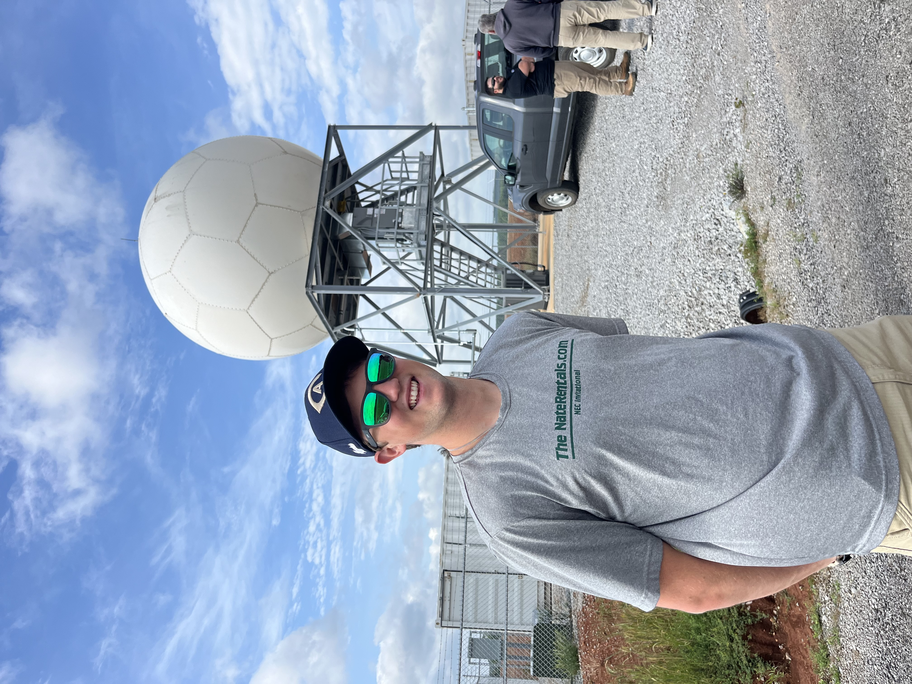

Welcome - I'm Lucas! I'm currently an atmospheric science PhD student in the Cloud Physics Group at the University of California Davis. As a student, I've always been interested in learning about who my instructors and collegues really are as people. This webpage is meant to serve as a resource for anyone who has that same inquiry about me. While I've included details about my research, my hope is that this page can help you get a better understanding of my story and who I am as a person. I'm always excited to meet new people both in and outside of academia, so I do sincerely hope you reach out! I'd love to chat! 
Thanks for visiting!